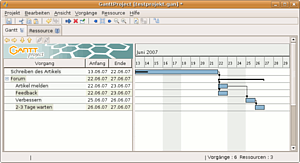
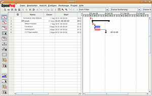
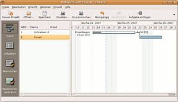
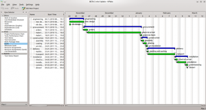
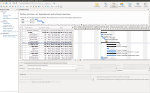
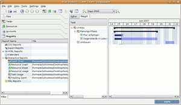

Projektmanagement
Ausbaufähige Anleitung
Dieser Anleitung fehlen noch einige Informationen. Wenn Du etwas verbessern kannst, dann editiere den Beitrag, um die Qualität des Wikis noch weiter zu verbessern.
Anmerkung: Dieser Artikel ist leider nicht ganz auf dem neuesten Stand. Möglicherweise sind nicht alle aufgezählten Pakete für aktuelle Ubuntu-Versionen verfügbar.
Zum Verständnis dieses Artikels sind folgende Seiten hilfreich:
Der Begriff Projektmanagement wird in der Informatik als "Das Projekt führen, koordinieren, steuern und kontrollieren." oder auch als "Gesamtheit von Führungsaufgaben, -organisation, -techniken und -mitteln für die Abwicklung eines Projektes" definiert.
Um diese Aufgaben besser meistern zu können, gibt es eine Reihe von Programmen, die z.B. Projektabläufe in einem sogenannten Gantt-Diagramm darstellen und Ressourcen (z.B. Arbeitskräfte usw.) verwalten. Dazu werden Projektabläufe in Bezug auf andere Abläufe (z.B. deren Beginn oder Ende) eingetragen.
Ein sehr häufig in Unternehmen eingesetztes kommerzielles Programm ist Microsoft Project für Windows. Doch auch für Linux gibt es mittlerweile Alternativen, die an kommerzielle Software leider nicht ganz heran reichen, weil viele noch in Entwicklung sind. Allerdings ist die Entwicklung sehr dynamisch. Doch einfachere Aufgaben, wie die oben genannten, unterstützen mittlerweile auch die nichtkommerziellen Lösungen.
GanttProject¶

Eine der wohl bekannten kostenlosen Alternativen ist GanttProject  . Es ist in Java geschrieben und kann das Dateiformat von MS Project lesen und schreiben sowie HTML- und PDF-Dateien erstellen.
. Es ist in Java geschrieben und kann das Dateiformat von MS Project lesen und schreiben sowie HTML- und PDF-Dateien erstellen.
Installation¶
Vor der Installation muss eine aktuelle Version von Java installiert sein. Am besten lädt man das .deb-Paket, das für Ubuntu erstellt wurde, von der Webseite herunter und installiert dieses [2]. Das Programm kann man durch den entsprechenden Menüeintrag (unter "Büro") starten.
Hinweis!
Fremdpakete können das System gefährden.
Alternativ kann man auch die Java-Dateien als ZIP herunterladen, entpacken [3] und starten.
OpenProj¶

Das freie Open-Source-Programm OpenProj ist ein in Java geschriebenes Programm und hat sich das Ziel gesetzt, ein Ersatz für MS Project zu sein. Das Layout entspricht fast dem von Microsoft und das Programm kann auch Dateien von MS Project und Planner importieren. Speichern kann es nur in das eigene Projity-Format und ins XML-Format von MS Project (ab MS Project 2003). Neben klassischen Gantt-Diagrammen kann man auch Netzpläne erstellen. Übersichten zur Ressourcenplanung sowie ein Soll-Ist-Vergleich sind ebenfalls integriert.
Nachdem die Fa. Serena die Weiterentwicklung nicht mehr unterstützt, ist 2012 die Abspaltung (Fork) ProjectLibre als Nachfolger von OpenProj entstanden.
Installation¶
Vor der Installation muss eine aktuelle Version von Java installiert sein. Um das Programm zu installieren, muss lediglich das aktuelle .deb-Paket von der Downloadseite heruntergeladen und installiert [2] werden.
Hinweis!
Fremdpakete können das System gefährden.
Anschließend kann man das Programm im Menü unter "Büro -> OpenProj" oder mit dem Befehl openproj starten.
ProjectLibre¶
ProjectLibre ist der Nachfolger von OpenProj, welches 2012 eingestellt wurde. Das Projekt versteht sich als Open-Source-Ersatz für Microsoft Project. Obwohl die momentan frei zugängliche Dokumentation momentan noch etwas spärlich ist, ist der Funktionsumfang groß. Auch ProjectLibre erlaubt den Import von Microsoft Project Dateien.
Installation¶
Vor der Installation muss eine aktuelle Version von Java installiert sein. Um das Programm zu installieren, muss lediglich das aktuelle .deb-Paket von der Downloadseite heruntergeladen und installiert [2] werden.
Hinweis!
Fremdpakete können das System gefährden.
Planner¶

Planner , ein für Linux und mittlerweile auch für Windows verfügbares Programm des GNOME-Desktops, kann zwar MS Project-Dateien lesen, aber nicht abspeichern (wobei bei einem Import ein Datenverlust nicht auszuschließen ist). Des weiteren unterstützt das Programm das Speichern der Daten in einer Datenbank.
 mit
mit Plan¶
 Plan (früher KPlato) ist ein Programm zur Projektplanung und -verwaltung und Bestandteil der Büro-Suite Calligra (früher KOffice). Plan kann auch in Dokumente anderer Calligra Anwendungen eingebunden werden. Es bietet eine Gantt-Ansicht und die grundlegenden Projektmanagement-Funktionen. Derzeit kann nur ein programmeigenes Dateiformat gelesen und geschrieben werden.
RationalPlan¶

RationalPlan ist eine Projekt-Management-Software für die Planung, Durchführung und Analyse von Projekten erhältlich und eine Alternative zu Microsoft Project unter Linux, Windows und Mac OS X. Erhältlich in den Editionen Viewer, Single, Multi und Server. RationalPlan Single ist auf Linux kostenlos.
Installation¶
Vor der Installation muss eine aktuelle Version von Java installiert sein. Um das Programm zu installieren, muss lediglich das aktuelle .deb-Paket von der Downloadseite heruntergeladen und installiert [2] werden.
Hinweis!
Fremdpakete können das System gefährden.
TaskJuggler / tj3¶

Im Gegensatz zu anderen Programmen verwendet man in TaskJuggler eine einfache Programmiersprache, um Projekte zu planen und als Grafik darzustellen. Leider verfügt es über keine Import- oder Export-Funktion, auch lässt sich das Dateiformat mit keinem anderen Programm öffnen.
Trac¶
Trac ist eine webbasierte Anwendung zur gemeinschaftlichen Software-Entwicklung und bietet neben einem Wiki eine Quellcode- und Projektverwaltung mit Anbindung an eine Datenbank und ein Subversion-Repository. Trac kann mit verschiedenen Datenbanken umgehen und sowohl als Standalone-Server betrieben oder an einen Webserver gebunden werden.
Weitere¶
Open Workbench
- Linux-Version soll kommen Redmine - auf Ruby on Rails basierendes Kollaborationstool zur Verwaltung von Softwareprojekten
]project-open[ - freie web-basierende Projektmanagement- und Kollaborationssoftware Retrospectiva
- web-basiertes Kollaborationstool Track+
 - web-basierende Projektmanagementsoftware
- web-basierende Projektmanagementsoftware ProjectPier
- freie, webbasierende Projektmanagement-Software, basierend auf ActiveCollab OpenSourceCMS - Groupware
- Portal zu Groupware für web-basierendes Projektmanagement auf PHP-BasisGROUP-E
- freie webbasierende Groupware, welche ein Projektmanagement integriert hat Collanos
- Desktop-Kollaborationssoftware mit Peer-to-Peer-Unterstützung dotProject
- Softwareprojekt zur Projektplanung und -verwaltung
Links¶
Vergleich von Projektmanagementsoftware - Wikipedia
Perfekt abgestimmt - Software zur Projektplanung
- Linux-Magazin, 07/2005
- Erstellt mit Inyoka
-
 2004 – 2017 ubuntuusers.de • Einige Rechte vorbehalten
2004 – 2017 ubuntuusers.de • Einige Rechte vorbehalten
Lizenz • Kontakt • Datenschutz • Impressum • Serverstatus -
Serverhousing gespendet von